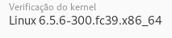
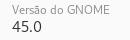
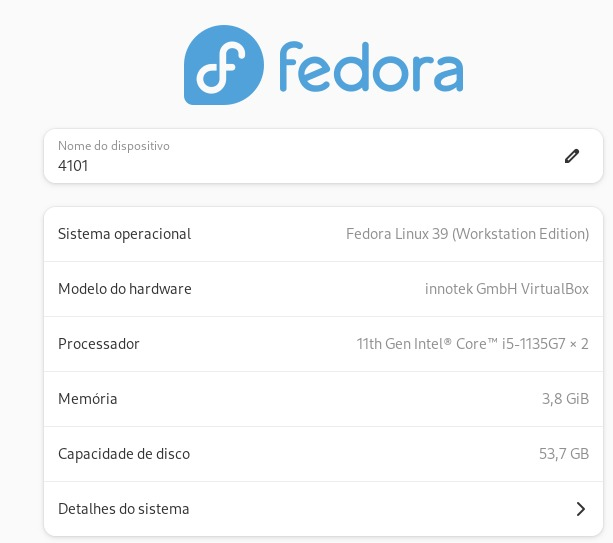
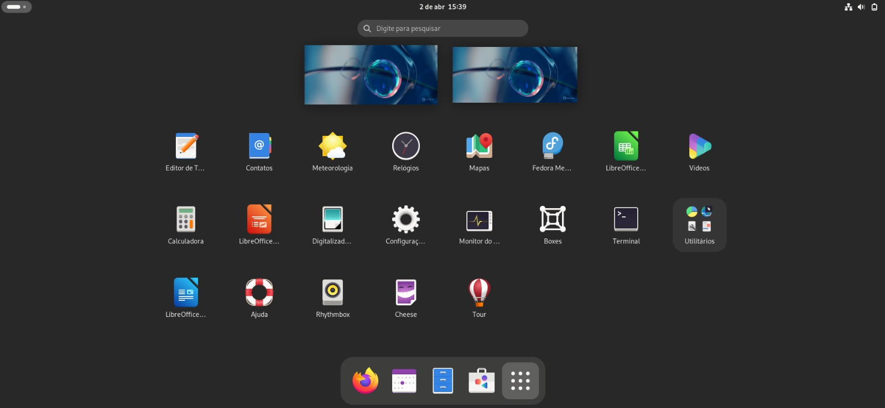
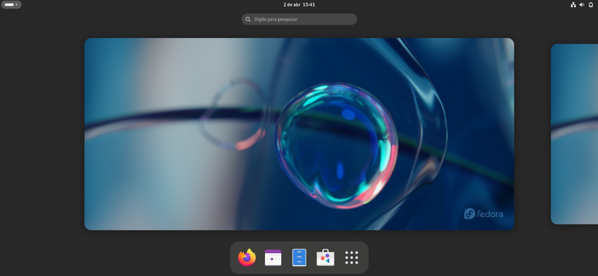
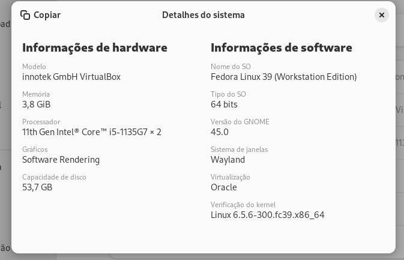

Informações sobre a última versão lançada:
O Projeto Fedora lançou o Fedora 39! Uma nova versão que traz diversas
atualizações e melhorias.

Qual a data de lançamento da última versão?
Essa versão foi lançada em 07/11/2023 e irá permanecer até o suporte oficial dar
um fim em 12/11/2024, enquanto isso, uma nova versão estará sendo executada, o
“Fedora 40” que lançou um beta no dia 26 de março para a realização de testes.
Principais atualizações e melhorias:
- GNOME 45
- Versão atualizada do Inkscape
- Ferramentas de desenvolvimento atualizadas
- Introdução do novo tipo de desktop chamado Fedora Onyx, utilizando o ambiente Budgie
Esta versão é descrita como um sistema operacional completo e desenvolvido pela
comunidade, adequado para uma variedade de dispositivos, incluindo desktops,
laptops, servidores, nuvem e dispositivos de borda. O Fedora Onyx oferece uma
experiência de desktop "Atomic" baseada no Budgie, seguindo o conceito do Fedora
Silverblue. A nova versão também inclui atualizações para outros
ambientes de desktop, como KDE Plasma Desktop, Xfce e Cinnamon, entre outros.
O Fedora 39 representa um marco significativo para o projeto, sendo
lançado exatamente 20 anos após o lançamento do Fedora Core 1, em 6 de novembro
de 2003.
A versão do kernel instalado:

Ambiente desktop que a distro instalada está usando:

Versão da distribuição que está instalada:

Vamos explorar o sistema! Aqui estão algumas imagens, como o desktop e configurações:



O link a seguir inicia o download da imagem do sistema operacional
Download da ISO